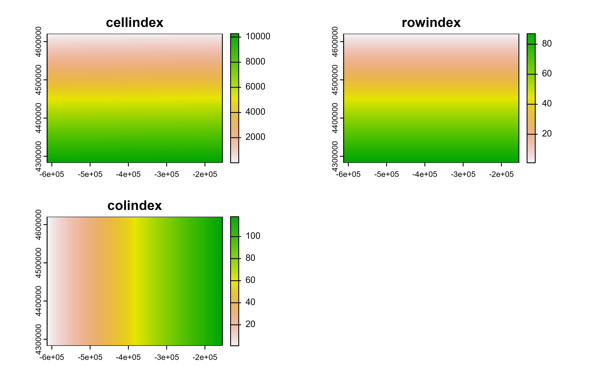

as_coordinates() returns the position of each cell in the
SpatRaster
matrix.
Value
A tibble or a SpatRaster (if as.raster = TRUE) with
one row (or cell) for each cell in x.
When as.raster = TRUE, the resulting SpatRaster has the
same CRS,
extent and resolution as x.
See also
Coercing objects:
as_sf(),
as_spatraster(),
as_spatvector(),
as_tibble.Spat,
fortify.Spat,
tidy.Spat
Examples
library(terra)
f <- system.file("extdata/cyl_temp.tif", package = "tidyterra")
r <- rast(f)
as_coordinates(r)
#> # A tibble: 10,266 × 3
#> cellindex rowindex colindex
#> <int> <dbl> <dbl>
#> 1 1 1 1
#> 2 2 1 2
#> 3 3 1 3
#> 4 4 1 4
#> 5 5 1 5
#> 6 6 1 6
#> 7 7 1 7
#> 8 8 1 8
#> 9 9 1 9
#> 10 10 1 10
#> # ℹ 10,256 more rows
as_coordinates(r, as.raster = TRUE)
#> class : SpatRaster
#> size : 87, 118, 3 (nrow, ncol, nlyr)
#> resolution : 3881.255, 3881.255 (x, y)
#> extent : -612335.4, -154347.3, 4283018, 4620687 (xmin, xmax, ymin, ymax)
#> coord. ref. : World_Robinson
#> source(s) : memory
#> names : cellindex, rowindex, colindex
#> min values : 1, 1, 1
#> max values : 10266, 87, 118
as_coordinates(r, as.raster = TRUE) |> plot()
